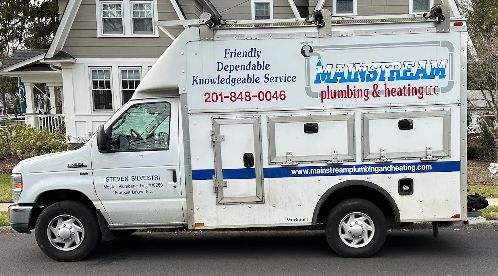
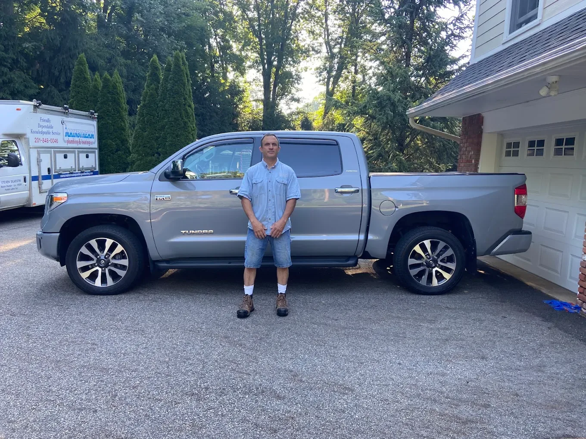
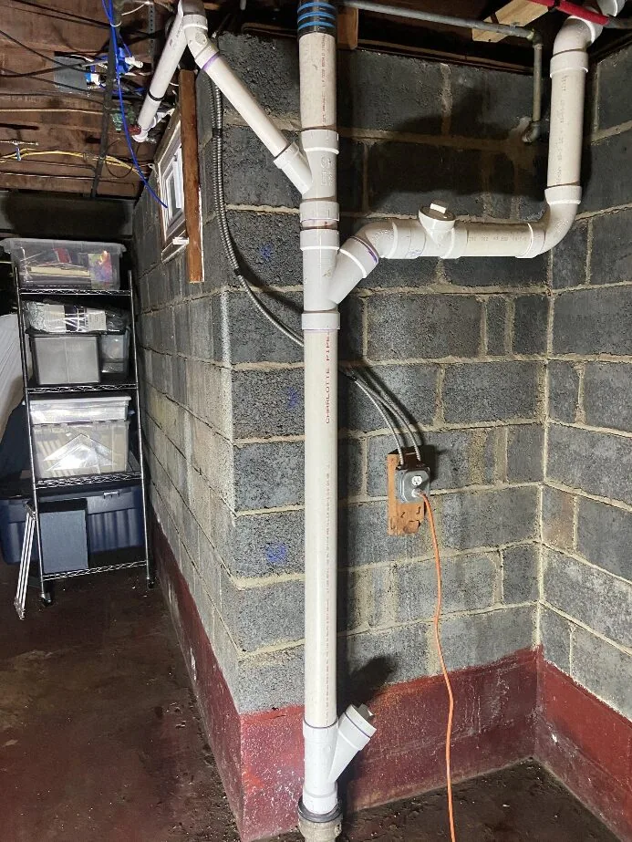
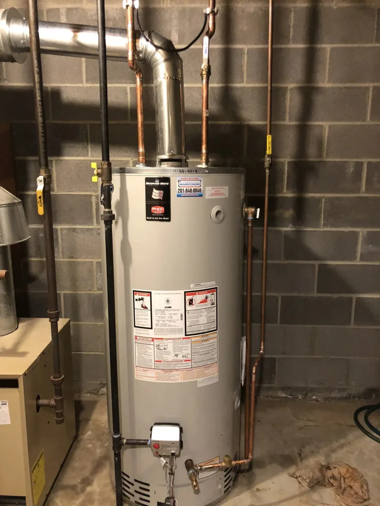
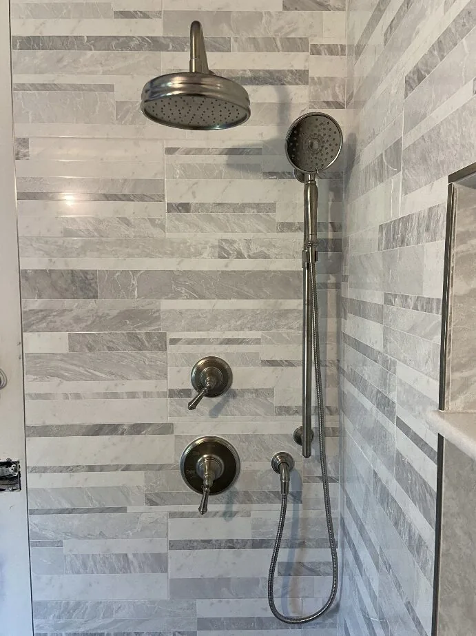
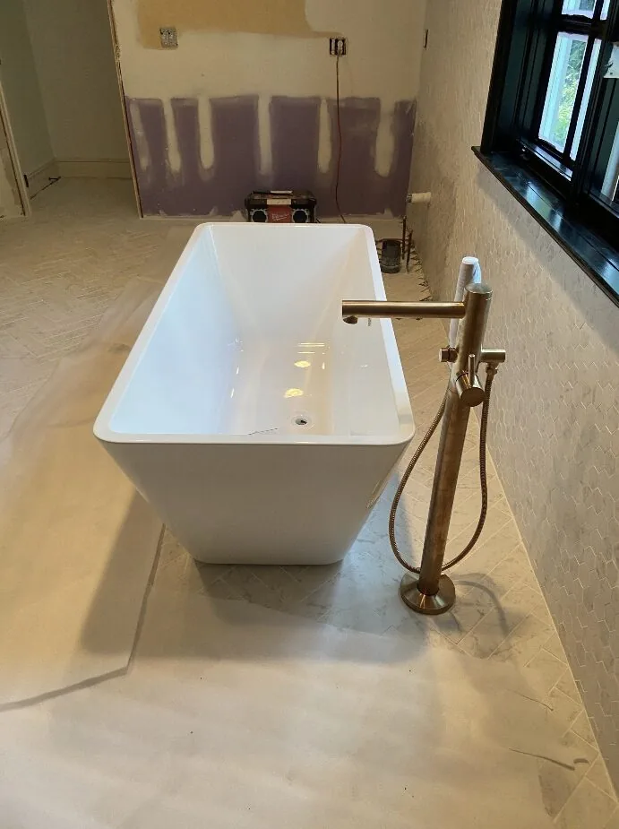
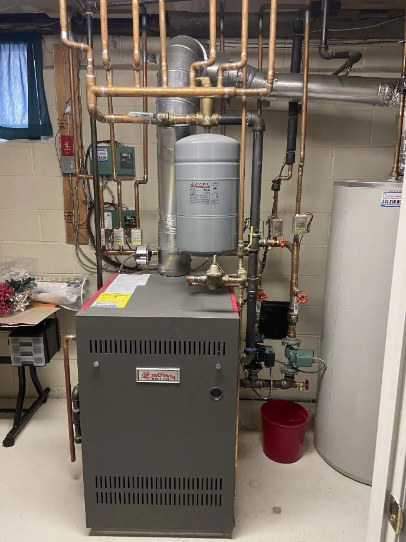
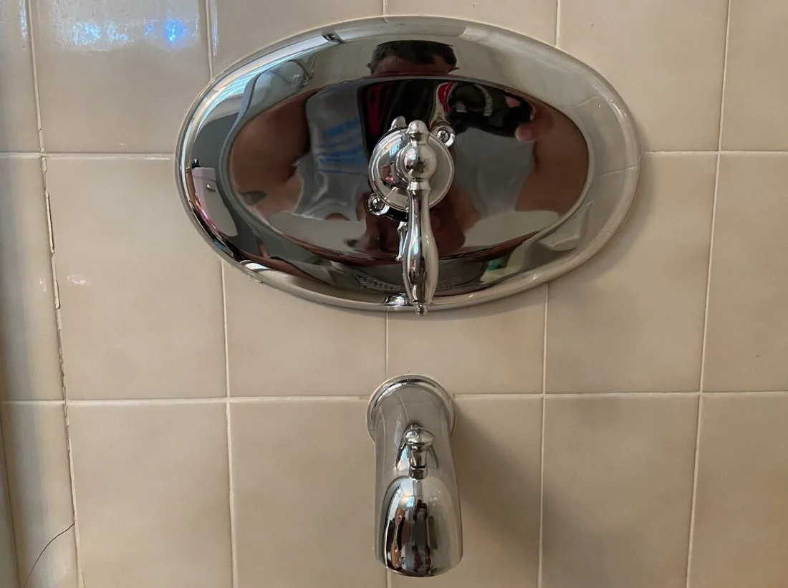

Boiler & Heating Service
Hot water, steam, and radiant heating repairs and installations handled with care by a licensed master plumber.
Franklin Lakes, NJ • Bergen & Passaic County
Mainstream Plumbing and Heating is a locally owned, owner-operated company led by Steven Silvestri, a Licensed Master Plumber with 30 years of experience helping homeowners with boilers, water heaters, gas lines, heating service, and plumbing repairs.
For the fastest response, call Steven directly.

Local. Experienced. Accountable.
Mainstream Plumbing and Heating was built on reliable service, honest communication, and quality work. Owner Steven Silvestri has served local homeowners for 30 years, handling everything from everyday plumbing repairs to boilers, water heaters, gas lines, and heating systems.
When you call Mainstream, you are not dealing with a large call center or a rotating crew of technicians. You work directly with Steven, a licensed master plumber who takes the time to understand the issue, explain the options, and complete the job carefully.
Call Steven Today
Owner-operated service with the experience, licensing, and long-term customer trust homeowners look for.
Residential Plumbing & Heating
Mainstream provides dependable residential plumbing and heating service throughout Bergen and Passaic County, with a focus on careful work, clear communication, and long-term reliability.
Hot water, steam, and radiant heating repairs and installations handled with care by a licensed master plumber.
Diagnosis, repair, and replacement for leaking, aging, or unreliable water heaters.
Safe, code-conscious gas line repairs and installations for residential plumbing and heating needs.
Help with leaks, toilets, faucets, fixtures, everyday plumbing issues, and repairs around the home.
Careful troubleshooting and repair for pipe problems, leak issues, and related water damage concerns.
Tub, shower, sink, toilet, and fixture installation or repair for bathroom projects and updates.
Need help with a plumbing or heating issue?
Call Steven DirectlyReal Local Work
From heating systems and water heaters to bathroom plumbing and pipe repairs, Steven takes pride in clean, dependable work done right.






137+ Five-Star Google Reviews
Mainstream has earned long-term customer trust through honest communication, reliable service, and work done carefully.
“Steve from Mainstream Plumbing has been an absolute lifesaver for us. He is prompt, reliable, incredibly trustworthy, and always takes the time to explain the options clearly.”
“I’ve worked with Steve for over 10 years, and I honestly can’t recommend him enough. When I’ve had no heat, he has been at my house within just a few hours.”
“Reliable, professional, and easy to work with. Every job he has done at my house has been done right the first time.”
“Steve is always timely, professional, courteous, and fair. I don’t even bother looking for another plumber.”
Call the local plumber homeowners recommend.
Call 201-848-0046“
Steven is the most reliable and efficient plumber I have ever used. There is no problem that I’ve had that was ever a challenge for him.
Local customer review
Service Area
Mainstream serves homeowners throughout Bergen and Passaic County, including the communities below.
Not sure if your home is in the service area? Call 201-848-0046 and ask Steven directly.
Questions Homeowners Ask
Yes. Mainstream Plumbing and Heating is led by Steven Silvestri, Licensed Master Plumber #10260.
Mainstream is based in Franklin Lakes, NJ and serves homeowners throughout Bergen and Passaic County.
Mainstream provides residential plumbing and heating services, including boiler work, water heaters, gas lines, general plumbing repairs, pipe repairs, bathroom plumbing, fixture installations, and drain cleaning.
Yes. Mainstream works on plumbing and heating systems, including hot water, steam, and radiant heating repairs and installations.
Mainstream does not advertise 24/7 emergency service. For urgent plumbing or heating issues, call directly and Steven will respond when available.
No. Mainstream focuses on plumbing and heating, not air conditioning service.
Request Service
For the fastest response, call Steven directly. You can also send a service request and Mainstream will follow up when available.
201-848-0046Licensed Master Plumber #10260 • Franklin Lakes, NJ